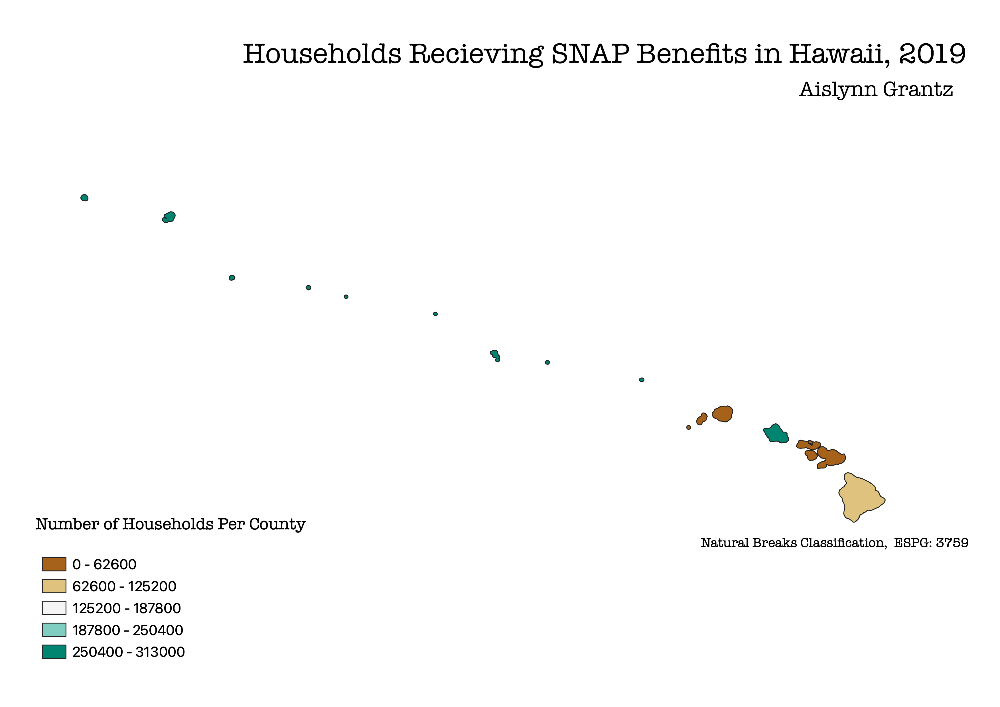

Homework 6: Census Data Choropleth of SNAP Benefits in Hawaii, 2019
This map projects the counties of Hawaii in ESPG: 3759 and shows the distribution of households utilizing SNAP benefits in 2019. I chose the state of Hawaii because my father's side of the family lives on the island of O'ahu which is an island in the Honolulu county. After the U.S. colonizatiion of Hawaii, many native Hawaiians face disproportional social and economic injustices from multiple American industries, especially in tourism. In additon to the erasure of native culture, much of the natural agricultural lands have been developed into tourist and military infrastructure.

Data used for this project
Link to cleaned csv dataset on GitHub
Link to geoJSON on GitHub